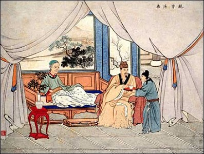
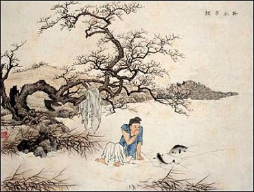
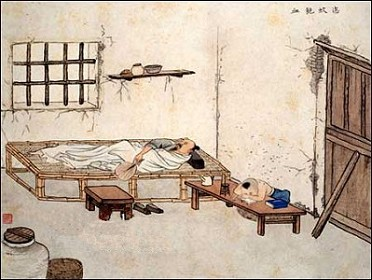
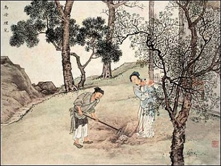
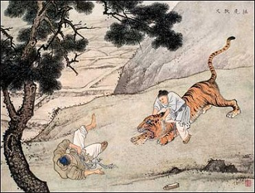
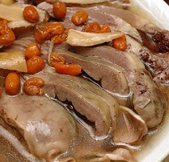
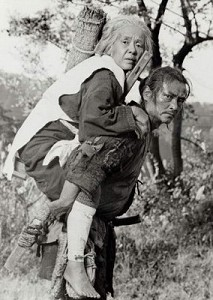

孝养之道
冯冯
 中国文化悠久，崇尚伦理，尤重孝道，儒家主张“父母在，不远游，游必有方”？意思就是父母在世之时，子女应多恭敬孝养，不宜远离，倘若有必要远行，也必须合理及有限度，这只是儒家思想影响中国人的一端？旧时代的中国社会，是原始的农耕社会，生产端赖人力与畜力，父母年老，无力耕种，又没有社会福利制度，假 如子女远离，父母就无以维生？因此，儒家托言是孔夫子垂教：“父母在，不远游”，也是有其时代需要的，但是，用于现代，就不很实际了？现代社会复杂，工商发达，科技为先，子女必须外出远行，去求生存，留学或就业，创造前程，怎能永久在家奉侍父母到老？
儒家思想推荐的孝道，在旧时代农村行得通？在现代却不免落后而且成为进步发展的绊脚石？假如人人都是在家乡侍候父母，不外出，不求学新知识新科技，中国人会有今天的成就吗？太空火箭、太空站、卫星，可以在父母家中发展吗？石油可以在家中开探吗？医疗的手术可以在家中实施吗？
以往儒家提倡的孝道而衍生的“二十四孝”故事，以今日现代眼光去看，有些是很不合理的，都是些“愚孝”，不是“真孝”？举例说：“卧冰求鲤”？做儿子的去躺卧在结冰的河面去求取鲤鱼，作为孝养父母的美馔？卧冰不被冻僵才怪，冻死了也未见取得鲤鱼，不论是冻死或冷病了，都徒使父母伤痛而已？这算什么 “孝”？卧冰求鲤，或许是北极爱斯基摩民族在冰原上“钻洞垂钓”的故事演变而来吧？
另一故事“以身喂蚊”，就更荒唐？说孝子脱了衣服， 以自己的身体去喂蚊，免得蚊子咬父母？此人真是天下第一大笨蛋！蚊子成群而来，怎会单咬他，而放过他的父母？与其以身饲蚊，还不如焚草以烟熏逐蚊子，这是农村常做的方法，没钱买蚊帐或蚊香，尽可焚草，何必以身喂蚊？
“割股养亲”此事更荒唐，更愚蠢，说是孝女把自己的 手臂上的肉割下来煮给重病的父亲吃了，老父就病好了？吃人肉可以治愈重病？真是鬼话连篇；全无医学依据！孝女自己割了肢肉，不会流血？不会痛死？不会感染病毒病菌？假如真有其人其事，也是最残酷最愚蠢的愚孝了？
“埋儿得金”的故事说，一个男子太贫穷，无钱买米孝 养老母亲，他认为幼儿留着耗粮，就掘地要将儿子活埋，以图节省粮食来奉养老母亲，哪知孝感动天地，掘地掘出藏金来了？此一故事的用心可诛可恨；那么残忍把亲生幼儿活埋，简真不是人！还称他是孝子呢？比不上爱斯基摩人的故事：在北极冰原上，没有粮食，一 个年老的母亲，自己到冰原上去饿死，以省下口粮给儿孙？日本著名“楢山传奇”(注)，也有一个故事，年迈的老母亲，命令儿子背她抛弃在山的深谷去让乌鸦吃掉，以 省下粮食给儿孙，那儿子一路哭泣，也还是把母亲抛弃在荒山了？三段故事看出各民族观念不同，不过，同样残酷与愚蠢；同样无益无补！
黄香“打虎救亲”，这是较为合情理的故事，老虎衔去他的父亲，他上去拼命打老虎，救下了老父，这是可信的、可颂的？“大舜耕田”，说舜以帝皇之尊，还亲下田驱象耕田，以耕种养母亲？这是可信的故事；尧舜时代，帝皇不过只是部落的酋长或村长，经济仍是落后，村民必须耕种维生，村长亲自耕种，也是正常现 象，不似后世的帝皇奢侈养尊处优？驱象拖犁，显然当时仍是热带，驯象供役是普见的，或者比牛更普及？后世气候变冷，象只消失，耕田改用牛马？或者，舜帝与部象根本就不是居住在中原，而是居住在中南半岛，现代的泰国或马来？有些人类学家与考古家说，漠族源起于中南半岛，后世逐渐北徙，进入中原漠水地带与黄河 流域，理论的依据是，在寮国一带出土的黑陶文物，经碳十四鉴定，有一万二千年历史，而中原仰韶文化的黑陶，上有五千多年。一九九九年，最新的ＤＮＡ比较，发现汉族与东非洲民族的ＤＮＡ相同，因此推论汉族可能源起非洲，大约在五万年前后居中南半岛？假如此论没错，那么大舜驱象耕田，也有可能是在中南或东非 呢？年代来算，在中南的可能性较大，大舜可能是六七千年前的人，不可能是五万年前？说到此处，恍然明白，为何不少中国人隐约具有非洲黑人的面貌特色，厚唇扁大鼻子，或者真是非洲人的子孙？
二十四孝故事不能一一枚举，只是略提，以见其不合情理，不符合现代需求。二十四个故事，大部份是荒谬的愚孝，而非真正的合理的孝，它们的影响力却很长久。中国社会在封建时代与旧农业社会都受其影响，奉为圭臬，直到现代才因时代进步而泯灭，不过也多少有些少残余影响。中国人一般都是崇尚孝道的？现代中国 人虽不做“二十四孝”那些愚蠢的孝，却也还是比较其他民族注重孝道？固然也有少数人忤逆父母，毕竟也只是少数？
中国人绝大多数都是孝敬父母与长辈的。孝敬的方式， 通常是供奉甘旨，把最补的补品给父母吃，例如：燕窝，高丽参，鱼肚之类，买不起这些，最少也得供养大鱼大肉、牛肉、猪肉、羊肉、果子狸、烤鸡、烧鸭、大龙虾、大闸蟹、大王蟹、海参、鱼翅、海蚌、海螺、鳝鱼、甲鱼、乌龟、乌鱼子、鱼子酱、蛇肉、三蛇羹、 龙虎凤、三蛇酒、虎骨酒、田鸡、牛扒、猪扒、鹿肉、沙文鱼........各种山珍海味，名贵补 品，不惜千金，平时孝养唯恐不足，特别是父母寿辰，生日宴会，更加奢侈豪华，吃尽人间美味，敬尽天下美酒，这才算是孝子贤孙？
很多人，在做寿之后不久就一命呜呼，或则中风瘫痪， 因为生平已经吃得太多丰富的营养补品，使到血压高升，血管硬化，胆固醇太高，血脂太高，再加上美酒补酒使到肝脏受害，心脏受损，寿宴的丰盛食物，所含的动物性浓缩脂肪与蛋白质太高，就如火上加油，使到血压飞升，引起爆血管和中风，轻则半身不遂，重则死亡？
可惜大多数孝子贤孙都不知其理，都以为孝养必须尽力 供奉最补的名贵补品，就是中下收入的人，也尽力供养父母，买不起大鱼大肉或高丽参，也得弄些猪什牛什、鱼头鱼尾、虾酱虾干、甚至有人用狗肉来供养父母的？用禾花雀、沙虫、田螺、泥鳅、龙虱、桂花蝉、田鼠肉......等等供养父母，是在乡村常见的事？所有这些补品，都含有高度蛋白质，更别说尿酸，新陈代谢的废物，病菌，毒素？例如：牛的消化系统内寄生有很多恶性的大肠菌，有人吃了未熟透的牛肉饼，就中了大肠菌之毒，轻则上吐下泻，重则死亡，一九九九年在美加，就有因此致死的人多达数千人，英国的疯牛症的牛肉，也曾引起数千人发狂及死亡。亚洲的瘟猪瘟鸡，曾经杀死数以万计的食肉者，香港不得不毁灭数百万只进口的鸡鸭，台湾不得不同样处理数万肥猪，英国不得不消灭两千万只肉牛，这些记忆犹新的事实，似乎也并未吓阻人们吃肉，那么，高血压、心脏病、爆血管中风，也就更未被放在心上了？人们自己拼命进补，也拼命供养父母进补，却不知道过份的补，就是毒药？
真正懂得孝道，就应该避免供养父母那些过份补品，应该供奉的甘旨，不是大鱼大肉，不是补酒，不是补药！？
真正的孝道，应该供养父母以保健的良品，例如：青菜，豆腐，水果等等素食？这些新鲜的素品，可以使父母延年益寿，身壮力健，用保健的素食孝养父母，才是真正的孝，非但保健，使父母延年益寿，而且避免很多杀孽，减少他们的孽障，免受恶报？
信佛者自然知道佛戒杀生佛劝素食，也知食荤肉有业 报，佛经不少讲吃肉的恶报，不信者视之为迷信？其实，高血压、中风、心脏病、肝病、癌症，不少是从吃肉引起的，这些现世恶报，也不可信吗？
如果不信来生恶报，至少也应相信现世恶报呀：可惜佛教的弘法者，多讲来生，却少讲今生的恶业恶报，反而不信佛的西方社会人士，大批的推广保健素食，劝人勿吃荤肉以免患病，他们没讲来生恶报，只说今生吃肉恶报？虽非佛教，却已深得佛心，用意慈悲，西方素食提倡的书刊与电视电台节目，多如繁星，反视佛教在 此方面瞠乎其后其后，令人汗颜：世人难知来生，何不多用今生来劝化他们呢？佛教主张吃素，源于慈悲戒杀，若能劝化世人素食，即是减少了杀孽，减少恶因，讲来生，太渺茫，还是讲今生保健动听些。
明理的人孝敬父母，应该就勿供奉那些荤肉补品，应该供养保健的素食。
网注： 《楢山节考》日本小说，深泽七郎着，叙述日本古代信州寒村的山林内弃佬传说，乡下人民生活非常穷苦，男人为了生存每天都很辛苦的工作，女婴一出生就卖给有钱人家，换来的钱来贴补用，男婴则弃道旁。在乡下有一个不成文的规定，老人家到了70岁的年纪，就要由家人背到深山野岭等死，年已69岁的阿玲婆为了让孙子多一口饭吃，忍痛拿起石头敲掉自己的牙齿，让自己看起来苍老一些。这看似非常荒谬不 合人情，却深刻地描绘出严苛的生存环境之下，自然界的残酷生存法则。 作者深泽七郎做了一首“楢山节”的曲子贯穿整个故事，因此名为“楢山节考”。楢山节考至今曾两度拍摄成电影，1958年 由木下惠介导演，女主角田中绢代为了求逼真，竟把自己的门牙摔断；1983年由今村昌平监督，获得坎城影展“金棕榈奖”。
──Jenny
资料来源：http://tw.knowledge.yahoo.com/question/?qid=1007011410689
图片出处
原载《佛网》网站
2000 年 ── 2002 年